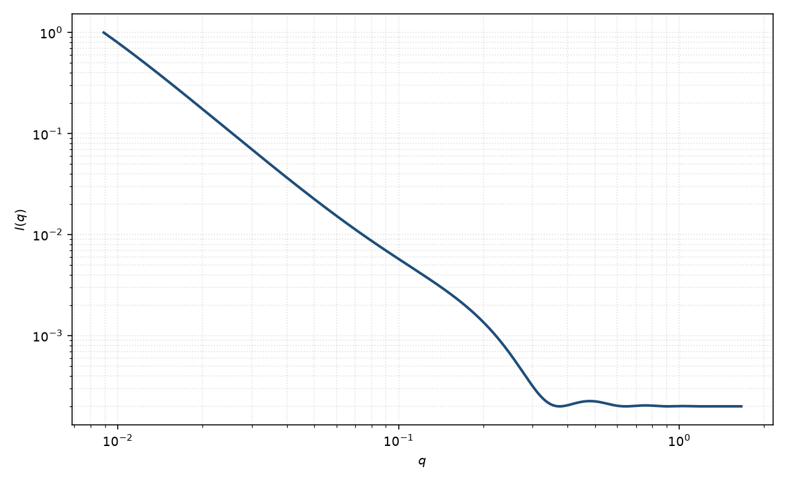

分形
fractal
适用场景
聚集体由近乎相同的建造块按标度不变的方式堆起来时，用 Teixeira 分形散射。低 $q$ 由整体截断 $\xi$ 给出 Guinier 型饱和，中间 $q^{-D}$，高 $q$ 回到建造块形式因子。
只关心中间斜率时可用质量分形或纯幂律。界面粗糙主导则用表面分形。核与分形壳衬度不同时用核壳分形。
物理图像
结构因子把分形维数 $D$、建造块半径 $r_0$ 与指数截断 $\xi$ 组合起来。取向平均的 Teixeira $S(q)$ 在 $1/\xi\ll q\ll 1/r_0$ 给出 $q^{-D}$。
建造块仍可用球形式因子。磁性若只在建造块核上，高 $q$ 磁形式因子与核通道不同，但中间指数可以相同。
示意图

核心公式
出发点
质量分形聚集体的成对密度在建造块半径 $r_0$ 与整体截断 $\xi$ 之间服从 $g(r)\propto r^{D-3}$。结构因子是这个相关的三维 Fourier 变换，再乘建造块形式因子 $P(q)$。Teixeira 给相关加上指数截断 $\mathrm{e}^{-r/\xi}$，以便积分闭合。
推导
取对关联（$r>r_0$）
$$g(r)=\frac{D}{4\pi r_0^D}\,r^{D-3}\,\mathrm{e}^{-r/\xi}.$$$S(q)=1+4\pi n\int r^2 g(r)\,(\sin(qr)/(qr))\,\mathrm{d}r$。幂律 $r^{D-3}$ 的变换给出 $q^{-D}$；指数截断把积分写成 Gamma 函数与复数 $(1-iq\xi)^{1-D}$。取虚部后得到 Teixeira 式
$$S(q)=1+\frac{D\Gamma(D-1)\sin[(D-1)\arctan(q\xi)]}{(q r_0)^D}\,\bigl(1+(q\xi)^{-2}\bigr)^{(1-D)/2}.$$观测 $I(q)\propto P(q)\,S(q)+B$。$P(q)$ 常取半径 $r_0$ 的均匀球 $\Phi(qr_0)^2$。
低 $q$ 与渐近
$q\xi\ll 1$：$S(q)$ 饱和到与聚集体总质量有关的常数，整体呈 Guinier 型，截断长度 $\xi$ 与 $R_g$ 同量级。中间 $1/\xi\ll q\ll 1/r_0$：$S(q)\sim q^{-D}$。高 $q$：$S\to 1$，曲线回到建造块 $P(q)$，光滑球则进入 Porod $q^{-4}$。
参数表
| 参数 | 符号 | 含义 | 单位 | 典型范围 |
|---|---|---|---|---|
| 分形维数 | $D$ | 质量分形维数 | 无量纲 | 通常 $1$–$3$ |
| 截断长度 | $\xi$ | 聚集体整体截断 | Å | 大于建造块 |
| 建造块半径 | $r_0$ | 一次颗粒半径 | Å | 5–100 Å |
| 标度 / 本底 | $\mathrm{scale}$, $B$ | 前置因子与常数本底 | 与强度单位一致 | 实验相关 |
拟合注意
取向：各向同性聚集体不必引入 $\theta,\phi$。若聚集体被拉伸成各向异性分形，有效 $D$ 随方向变。
多分散建造块抹平高 $q$ 振荡，并改变 $r_0$。磁性：磁 $D$ 可以不同于核 $D$，若只有部分颗粒带磁矩。
可辨识性：$D$、$\xi$、$r_0$ 需要跨越三个区的窗口。只拟合中间直线时本模型退化为幂律，不要报告 $\xi$。
相近模型
参考文献
- Teixeira, J. Small-angle scattering by fractal systems. J. Appl. Cryst. 1988, 21, 781–785. DOI: 10.1107/S0021889888001990
- Sinha, S. K.; Freltoft, T.; Kjems, J. In Kinetics of Aggregation and Gelation; Family, F., Landau, D. P., Eds.; Elsevier: Amsterdam, 1984.